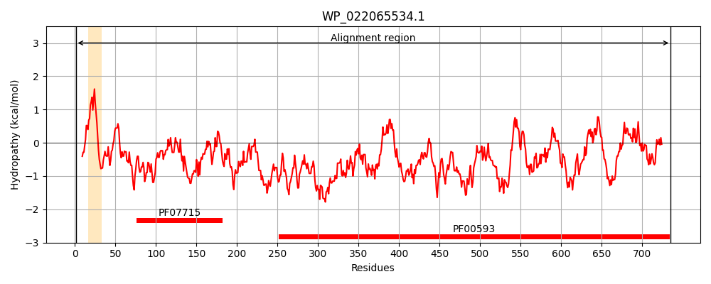
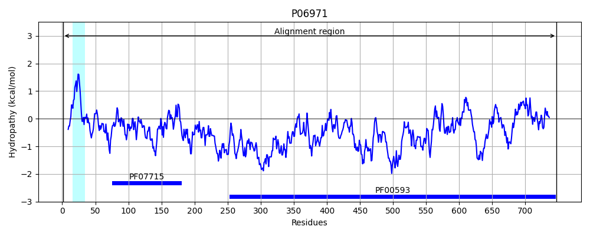
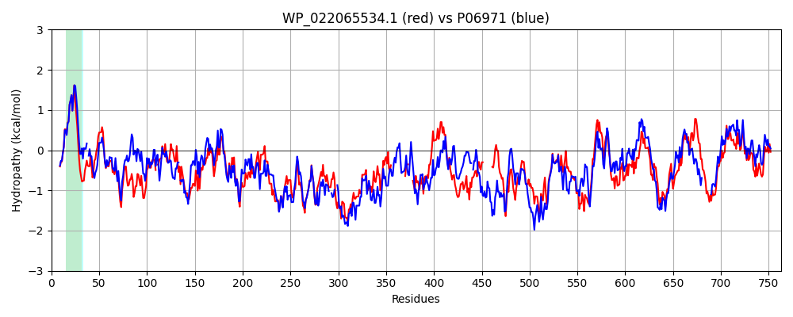

Hit Accession: P06971
Hit TCID: 1.B.14.1.2
Hit Description: gnl|BL_ORD_ID|8394 gnl|TC-DB|P06971|1.B.14.1.2 FERRICHROME-IRON RECEPTOR PRECURSOR (FERRIC HYDROXAMATE UPTAKE) (FERRIC HYDROXAMATE RECEPTOR) - Escherichia coli.
Mach Len: 763
e:0.000000
Query TMS Count : 1
Hit TMS Count: 1
TMS-Overlap Score: 0.900000
Predicted Substrates:CHEBI:5019;ferrichrome, CHEBI:29673;rifamycin SV, CHEBI:77879;elaiophylin
BLAST Alignment:
Score: 2390 , Bit scores: 925 bits, E-value: 0.0e+00, Alignment length: 763, Percentage identity: 61
Query: 1 MARPKTAQPNHSLRKIAVVVATAVSGMSVYAQAAEQPKQEETITVVAAPAAQESAWGPAPTIAAKRSATATKTDTPIEKTPQSVSVVTRQEMEMRQPTTVKEALSYTPSV-FSTRGSSTTYDVVTIRGFTTSTTVNTNQYLDGMKLQGNNYSEVSMDPYFLERVEVMRGPTSVLYGNSNPGGIVSMVSKRPTTEPLKEVQFKMGTDNLWQTGFDFSDAIDDAGVWSYRLTGLGRSQDTQQQMAKSTRYAVAPSFSWRPDDKTDFTFLSNFQNDPDAGYYGWLPREGTVVPYYDANGKAHKLPTDFNEGEADNKISRRQKMVGYSFSHQFDDTFTVRQNLRYAEVDTLYRSVYGNGY--------------VAPG----YMNRAYVRSDEHLNTFTVDTQLQSAFATGAVSHTLLTGVDYSRMRNDVDADYGTADPISMSNPQYGNPNIQVTF---------PYAVLNRMEQTGLYAQDQMEWDKWVMTLGGRYDYATTSTLTRSSNSLAENHDQQFTWRGGINYLFDNGISPYFSYSESFEPVSGSGLNGQPFDPSRGKQYEAGVKYVPKDMPVVVTAAVYQLTKDKNLTADPANQAFSIQTGEIRSRGLELEAKAAVNANINVTAAYSYTDAEYTHDTVFNGKRPAEVPRNMASLWADYTFHETALSGLTVGAGARYIGSTVSYYKTDTSTGNKNDAFNVAGYALMDATVKYDLARFGLPGSSVGVNVNNLFDREYVSSCYSEYACYWGAGRQVVATATFRF 735
MAR KTAQP HSLRKIAVVVATAVSGMSVYAQAA +PK E+TITV AAPA QESAWGPA TIAA++SAT TKTDTPI+K PQS+SVVT +EM + QP +VKEALSYTP V TRG+S TYD + IRGF + N YL+G+KLQGN Y++ +DPY LER E+MRGP SVLYG S+PGG+++MVSKRPTTEPLKEVQFK GTD+L+QTGFDFSD++DD GV+SYRLTGL RS + QQ+ ++ RYA+AP+F+WRPDDKT+FTFLS FQN+P+ GYYGWLP+EGTV P NGK +LPTDFNEG +N SR +KMVGYSF H+F+DTFTVRQNLR+AE T SVYG G +AP Y+ R YV DE L F+VDTQLQS FATG + HTLLTGVD+ RMRND++A +G D + + N Y N F PY +LN+ +QTG+Y QDQ +WDK ++TLGGRYD+A +L R + + + D+QFTWRGG+NYLFDNG++PYFSYSESFEP S G +G F PS+GKQYE GVKYVP+D P+VVT AVY LTK NL ADP FS++ GEIR+RG+E+EAKAA++A++NV +Y+YTDAEYT DT + G PA+VP++MASLWADYTF + LSGLT+G G RY GS S G+ ++F V Y ++DA V+YDLAR G+ GS+V ++VNNLFDREYV+SC++ Y C+WGA RQVVATATFRF
Sbjct: 1 MARSKTAQPKHSLRKIAVVVATAVSGMSVYAQAAVEPK-EDTITVTAAPAPQESAWGPAATIAARQSATGTKTDTPIQKVPQSISVVTAEEMALHQPKSVKEALSYTPGVSVGTRGASNTYDHLIIRGFAAEGQ-SQNNYLNGLKLQGNFYNDAVIDPYMLERAEIMRGPVSVLYGKSSPGGLLNMVSKRPTTEPLKEVQFKAGTDSLFQTGFDFSDSLDDDGVYSYRLTGLARSANAQQKGSEEQRYAIAPAFTWRPDDKTNFTFLSYFQNEPETGYYGWLPKEGTVEPL--PNGK--RLPTDFNEGAKNNTYSRNEKMVGYSFDHEFNDTFTVRQNLRFAENKTSQNSVYGYGVCSDPANAYSKQCAALAPADKGHYLARKYVVDDEKLQNFSVDTQLQSKFATGDIDHTLLTGVDFMRMRNDINAWFGYDDSVPLLN-LYNPVNTDFDFNAKDPANSGPYRILNKQKQTGVYVQDQAQWDKVLVTLGGRYDWADQESLNRVAGTTDKRDDKQFTWRGGVNYLFDNGVTPYFSYSESFEPSSQVGKDGNIFAPSKGKQYEVGVKYVPEDRPIVVTGAVYNLTKTNNLMADPEGSFFSVEGGEIRARGVEIEAKAALSASVNVVGSYTYTDAEYTTDTTYKGNTPAQVPKHMASLWADYTFFDGPLSGLTLGTGGRYTGS---------SYGDPANSFKVGSYTVVDALVRYDLARVGMAGSNVALHVNNLFDREYVASCFNTYGCFWGAERQVVATATFRF 747 | Protein Hydropathy Plots: |
|---|
|  |  |
Pairwise Alignment-Hydropathy Plot:
|
|---|
|  |